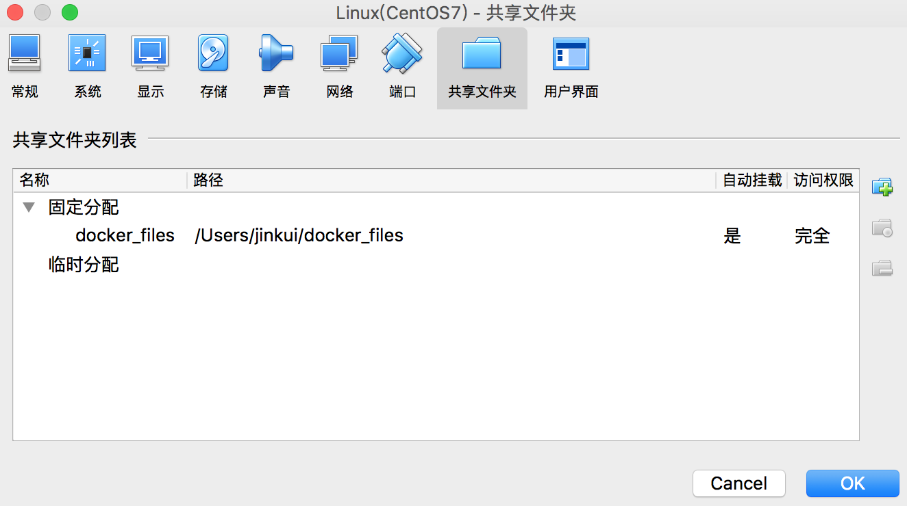

初始容器与Docker
https://docs.docker.com/engine/docker-overview/
什么是Docker
Docker开源项目背景
Docker是基于Go语言实现的开源容器项目，诞生于2013年年初，最初发起者是dotCloud公司。Docker自开源后受到广泛的关注和讨论，目前已有多个相关项目（包括Docker三剑客、Kubernetes等），逐渐形成了围绕Docker容器的生态体系。
由于Docker在业界造成的影响力实在太大，dotCloud公司后来也直接改名为Docker Inc，并专注于Docker相关技术和产品的开发。
对于Docker，目前的定义是一个开源的容器引擎，可以方便地对容器（关于容器，将在第2章详细介绍）进行管理。其对镜像的打包封装，以及引入的Docker Registry对镜像的统一管理，构建了方便快捷的“Build，Ship and Run”流程，它可以统一整个开发、测试和部署的环境和流程，极大地减少运维成本。
Docker在开发和运维中的优势
对开发和运维（DevOps）人员来说，可能最梦寐以求的效果就是一次创建或配置，之后可以在任意地方、任意时间让应用正常运行。
1.更快速的交付和部署。使用Docker，开发人员可以使用镜像来快速构建一套标准的开发环境；开发完成之后，测试和运维人员可以直接使用完全相同环境来部署代码。只要开发测试过的代码，就可以确保在生产环境无缝运行。Docker可以快速创建和删除容器，实现快速迭代，大量节约开发、测试、部署的时间。并且，整个过程全程可见，使团队更容易理解应用的创建和工作过程。
2.更高效的资源利用。Docker容器的运行不需要额外的虚拟化管理程序（Virtual Machine Manager以及Hypervisor）支持，它是内核级的虚拟化，可以实现更高的性能，同时对资源的额外需求很低。
3.更轻松的迁移和扩展。
4.更简单的更新管理。使用Dockerfile，只需要小小的配置修改，就可以替代以往大量的更新工作。并且所有修改都以增量的方式被分发和更新，从而实现自动化并且高效的容器管理。
核心概念
1.Docker镜像
镜像是创建Docker容器的基础。通过版本管理和增量的文件系统，Docker提供了一套十分简单的机制来创建和更新现有的镜像。
与容器相对应，如果说容器提供了一个完整的、隔离的运行环境，那么镜像则是这个运行环境的静态体现，是一个还没有运行起来的“运行环境”。
Docker镜像通常是通过Dockerfile来创建的，Dockerfile提供了镜像内容的定制，同时也体现了层级关系的建立。
ps:镜像自身是只读的。容器从镜像启动的时候，会在镜像的最上层创建一个可写层。
2.Docker容器
在功能上，Docker通过Libcontainer实现对容器生命周期的管理、信息的设置和查询，以及监控和通信等功能。而容器也是对镜像的完美诠释，容器以镜像为基础，同时又为镜像提供了一个标准的和隔离的执行环境。
在概念上，容器则很好地诠释了Docker集装箱的理念，集装箱可以存放任何货物，可以通过邮轮将货物运输到世界各地。运输集装箱的邮轮和装载卸载集装箱的码头都不用关心集装箱里的货物，这是一种标准的集装和运输方式。类似的，Docker的容器就是“软件界的集装箱”，它可以安装任意的软件和库文件，做任意的运行环境配置。
3.Docker仓库
是Docker集中存放镜像文件的场所。
Install Docker for Mac
https://docs.docker.com/docker-for-mac/install/
|
|
我们看到Client和Server均有输出，则说明Docker for Mac已经正常启动。
CentOS环境下安装Docker
OS requirements
To install Docker, you need the 64-bit version of CentOS 7.
我是在Mac上安装的VirtualBox，然后装上CentOS 7镜像。
对于CentOS 7系统，CentOS-Extras源中已内置Docker
yum安装
|
|
之后更新yum软件源缓存，并安装docker-engine 即可。
|
|
这是最新的版本。要想随意指定要安装的版本，如下命令，官网上如下。
1.List the available versions:
$ yum list docker-engine.x86_64 –showduplicates |sort -r
2.Install a specific version by adding the version after docker-engine, separated by a hyphen (-):
$ sudo yum install docker-engine-version
脚本安装
1.更新系统包到最新。
$ yum -y update
2.执行Docker安装脚本
|
|
获取镜像
Docker Hub 镜像站点
安装／升级你的Docker客户端
您可以通过阿里云的镜像仓库下载：mirrors.aliyun.com/help/docker-engine
或执行以下命令：
|
|
如何使用Docker加速器
针对Docker客户端版本大于1.10的用户
您可以通过修改daemon配置文件/etc/docker/daemon.json来使用加速器：
sudo mkdir -p /etc/docker
sudo tee /etc/docker/daemon.json <<-‘EOF’
{
“registry-mirrors”: [“https://wgqgbfsb.mirror.aliyuncs.com“]
}
EOF
sudo systemctl daemon-reload
sudo systemctl restart docker
镜像是运行容器的前提，官方的Docker Hub网站已经提供了数十万个镜像供大家开放下载。
可以使用docker pull命令直接从Docker Hub镜像源来下载镜像。该命令的格式为docker pull NAME[：TAG]。其中，NAME是镜像仓库的名称（用来区分镜像），TAG是镜像的标签（往往用来表示版本信息）。通常情况下，描述一个镜像需要包括“名称+标签”信息。
现在想要获得centos的Docker镜像，
1.docker search –no-trunc centos
2.docker pull docker.io/jdeathe/centos-ssh
查看镜像信息
1.使用images命令列出镜像
2.使用tag命令添加镜像标签
3.使用inspect命令查看详细信息
4.使用history命令查看镜像历史(docker history –no-trunc centos-ssh)
搜寻镜像
使用docker search命令可以搜索远端仓库中共享的镜像，默认搜索官方仓库中的镜像。用法为docker search TERM，支持的参数主要包括：
·–automated=true|false：仅显示自动创建的镜像，默认为否；
·–no-trunc=true|false：输出信息不截断显示，默认为否；
·–filter=stars=X：指定仅显示评价为指定星级以上的镜像，默认为0，即输出所有镜像。
例如：
|
|
删除镜像
使用标签删除镜像
使用docker rmi命令可以删除镜像，命令格式为docker rmi IMAGE[IMAGE…]，其中IMAGE可以为标签或ID。
创建镜像
创建镜像的方法主要有三种：基于已有镜像的容器创建、基于本地模板导入、基于Dockerfile创建。
本节将重点介绍前两种方法。最后一种基于Dockerfile创建的方法将在后续章节专门予以详细介绍。
基于已有镜像的容器创建
该方法主要是使用docker commit命令。命令格式为docker commit[OPTIONS]CONTAINER[REPOSITORY[：TAG]]，主要选项包括：
·-a，–author=””：作者信息；
·-c，–change=[]：提交的时候执行Dockerfile指令，包括CMD|ENTRYPOINT|ENV|EXPOSE|LABEL|ONBUILD|USER|VOLUME|WORKDIR等；
·-m，–message=””：提交消息；
·-p，–pause=true：提交时暂停容器运行。
基于本地模板导入
要直接导入一个镜像，可以使用OpenVZ提供的模板来创建，或者用其他已导出的镜像模板来创建。OPENVZ模板的下载地址为http://openvz.org/Download/templates/precreated
存出和载入镜像
1.存出镜像
2.载入镜像
|
|
或者
$ docker load < centos_7.tar.gz
这将导入镜像及其相关的元数据信息（包括标签等）。
创建&启动一个容器：
|
|
|
|
其中10022是宿主主机的端口，22是容器的SSH服务监听端口：
-p 10022:22
使用HostPort：ContainerPort格式将本地的10022端口映射到容器的22端口。
在宿主主机或其他主机上，可以通过SSH访问10022端口来登录容器。
使用docker inspect来查看容器的基础信息。
参见：https://docs.docker.com/engine/reference/commandline/inspect/
-v /dfile(主机):/dfile(容器):ro
上面的命令加载主机的/dfile目录到容器的/dfile目录。
ps：本地目录的路径必须是绝对路径，如果目录不存在，Docker会自动创建。
Docker挂载数据卷的默认权限是读写（rw），用户也可以通过ro指定为只读。
mount -t vboxsf the_share_name /a_folder_name
ps:VirtualBox与Mac共享文件夹为：docker_files

ps: $ docker ps -a
查看容器。
|
|
$ docker-enter centos-d 进入容器。
可以按Ctrl+d或输入exit命令来退出容器，
通过exit命令或Ctrl+d来退出终端时，所创建的容器立刻终止，处于stopped状态。
利用ssh进入到docker中的centos里
然后 我们试着从宿主机直接进入到docker中的centos里：
|
|
避免了先进入虚拟机系统，然后再进入docker中的centos里：
|
|
create命令与容器运行模式相关的选项
-d, –detach=true|false (是否在后台运行容器，默认为否)
-P, –publish-all=true|false (通过NAT机制将容器标记暴露的端口自动映射到本地主机的临时端口)
-p, –publish=[] (指定如何映射到本地主机端口)
–rm=true|false （容器退出后是否自动删除，不能跟-d同时使用）
-i, –interactive=true|false (保持标准输入打开，默认为false)
-t, –tty=true|false (是否分配一个伪终端，默认是false)
–expose=[] (指定容器会暴露出来的端口或端口范围)
–group-add=[] (运行容器的用户组)
-v|–volume[=[[HOST-DIR:]CONTAINER-DIR[:OPTIONS]]] (挂载主机上的文件卷到容器内)
-w, –workdir=”” (容器内的默认工作目录)
create命令与容器环境和配置相关的选项
–add-host=[] (在容器内添加一个主机名到IP地址的映射关系（通过/etc/hosts文件）)
-h, –hostname=”” (指定容器内的主机名)
–name=”” (指定容器的别名)
create命令与容器资源限制和安全保护相关的选项
–privileged=true|false (是否给容器以高权限，这意味着容器内应用将不受权限下限制，一般不推荐)
–read-only=true|false (是否让容器内的文件系统只读)
启动容器说明
当利用docker run来创建并启动容器时，Docker在后台运行的标准操作包括：
·检查本地是否存在指定的镜像，不存在就从公有仓库下载；
·利用镜像创建一个容器，并启动该容器；
·分配一个文件系统给容器，并在只读的镜像层外面挂载一层可读写层；
·从宿主主机配置的网桥接口中桥接一个虚拟接口到容器中；
·从网桥的地址池配置一个IP地址给容器；
·执行用户指定的应用程序；
·执行完毕后容器被自动终止。
终止容器
可以使用docker stop来终止一个运行中的容器。该命令的格式为docker stop[-t|–time[=10]][CONTAINER…]。
首先向容器发送SIGTERM信号，等待一段超时时间（默认为10秒）后，再发送SIGKILL信号来终止容器。
进入容器
在使用-d参数时，容器启动后会进入后台，用户无法看到容器中的信息，也无法进行操作。
这个时候如果需要进入容器进行操作，有多种方法，包括使用官方的attach或exec命令，以及第三方的nsenter工具等。下面分别介绍一下。
attach命令
attach是Docker自带的命令，命令格式为：
支持三个主要选项：
·–detach-keys[=[]]：指定退出attach模式的快捷键序列，默认是CTRL-p CTRL-q；
·–no-stdin=true|false：是否关闭标准输入，默认是保持打开；
·–sig-proxy=true|false：是否代理收到的系统信号给应用进程，默认为true。
ps:当多个窗口同时用attach命令连到同一个容器的时候，所有窗口都会同步显示。不常用。
exec命令
Docker从1.3.0版本起提供了一个更加方便的exec命令，可以在容器内直接执行任意命令。
比较重要的参数有：
·-i，–interactive=true|false：打开标准输入接受用户输入命令，默认为false；
·–privileged=true|false：是否给执行命令以高权限，默认为false；
·-t，–tty=true|false：分配伪终端，默认为false；
·-u，–user=””：执行命令的用户名或ID。
例如进入到刚创建的容器中，并启动一个bash：
|
|
可以看到，一个bash终端打开了，在不影响容器内其他应用的前提下，用户可以很容易与容器进行交互。
注意
通过指定-it参数来保持标准输入打开，并且分配一个伪终端。通过exec命令对容器执行操作是最为推荐的方式。
nsenter工具
在util-linux软件包版本2.23+中包含nsenter工具。
|
|
删除容器
可以使用docker rm命令来删除处于终止或退出状态的容器，命令格式为docker rm[-f|–force][-l|–link][-v|–volumes]CONTAINER[CONTAINER…]。
主要支持的选项包括：
·-f，–force=false：是否强行终止并删除一个运行中的容器；
·-l，–link=false：删除容器的连接，但保留容器；
·-v，–volumes=false：删除容器挂载的数据卷。
导入和导出容器
某些时候，需要将容器从一个系统迁移到另外一个系统，此时可以使用Docker的导入和导出功能。这也是Docker自身提供的一个重要特性。
导出容器
导出容器是指导出一个已经创建的容器到一个文件，不管此时这个容器是否处于运行状态，可以使用docker export命令，该命令的格式为docker export[-o|–output[=””]]CONTAINER。其中，可以通过-o选项来指定导出的tar文件名，也可以直接通过重定向来实现。
ps:实现容器的迁移
|
|
实际上，既可以使用docker load命令来导入镜像存储文件到本地镜像库，也可以使用docker import命令来导入一个容器快照到本地镜像库。
这两者的区别在于容器快照文件将丢弃所有的历史记录和元数据信息（即仅保存容器当时的快照状态），而镜像存储文件将保存完整记录，体积也更大。此外，从容器快照文件导入时可以重新指定标签等元数据信息。
参考在此：Docker技术入门与实践
Docker进阶与实战 作者：华为Docker实践小组